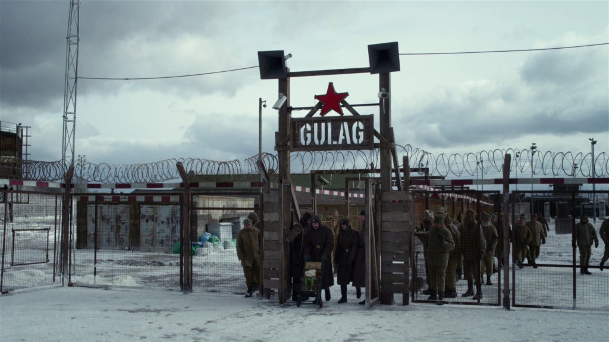

Over the time many people have found remains of prehistoric creatures that come from the ice age. Several people even found preserved remains frozen inside of the ice, with skin, hair and everything still attached. These creatures include the mammoth, the saber-toothed-tiger and the woolly rhino.
Thanks to the extremely cold weather, several of these creatures are naturally preserved in ice. The weather also helps preserving the environment, eversince not many people are willing to live there. So no people, no factories, no polution and no deforestation.
When stalin started ruling the union in 1922, he started constructing labor camps in siberia for the ones who didn't follow his rules. the trans siberian line was used more frequent than before and troops were all over siberia to guard the camps from being raided by other soldiers or civilians.
The camps in general were know as the 'Gulag archipel'. It were labor camps for the ones who 'betrayed' the union and were forced to hard labor. this all happened between 1922 and 1952. in the summer the weather conditions weren't that bad in the camps. but if you had to work in the winter, you really had to be lucky to make it. many people suffered from hypothermia, and eventually they litterally froze to death.
People who were sent to one of the gulag camps were forced to work hard for no money. But there were also a lot of mines, because siberia is rich of natural resources. Such as diamonds, oil, coal and natural gas. The people who worked here were getting paid of course but still, these people were really hard workers and got barely paid for their efforts.
Preserved remains of a baby mammoth found in siberia.
One of the gulag camps.
One of the hard workers who didn't survive the harsh winter.